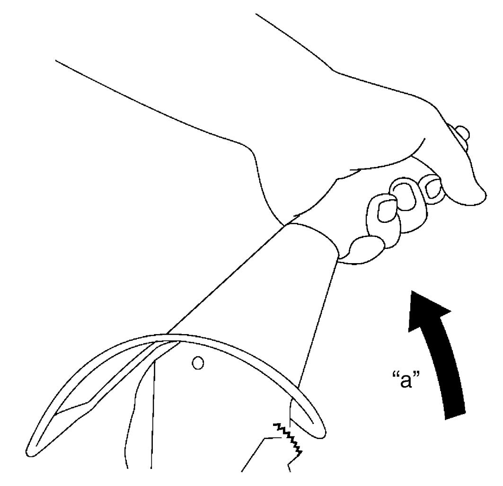

4D
| Parking Brake Inspection and Adjustment |
NOTE:
Check the following conditions before parking brake inspection and adjustment.
•No air is trapped in brake system.
•Brake pedal travel is proper.
•Rear brake pad is not worn beyond limit.
•Brake warning light should be checked when ignition is “ON”.
•Brake pedal travel is proper.
•Rear brake pad is not worn beyond limit.
•Brake warning light should be checked when ignition is “ON”.
Inspection
•With parking brake lever pulled up, check the following items. If check result is not OK, adjust or replace parking brake cable.
a.Operation of parking brake lever is smooth.
b.Rear wheels are locked firmly.
c.Operate parking brake lever with force of 200 N (20.4 kgf, 45.0 lbf) as shown, counting number of clicks ratchet notches generate.

•Release parking brake lever and check that brake warning light turns off. Then check that brake warning light turns on within 1 notch when parking brake lever is pulled up. If check result is not OK, check and, if necessary, repair the following items.b.Rear wheels are locked firmly.
c.Operate parking brake lever with force of 200 N (20.4 kgf, 45.0 lbf) as shown, counting number of clicks ratchet notches generate.
NOTE:
One click sound corresponds to one notch.
Parking brake stroke
“a”
When lever pulled up at 200 N (20.4 kgf, 45.0 lbf):
4 to 9 notches

 "Expand image")
NOTE:
Check that ABS warning light is turned off.
a.Remaining amount of brake fluid 
b.Brake fluid level switch (attached to brake master cylinder reservoir)
c.Parking brake switch
b.Brake fluid level switch (attached to brake master cylinder reservoir)
c.Parking brake switch
Adjustment
1)Remove floor console rear box.
2)Release parking brake.
3)Loosen parking brake adjusting nut (1) until parking brake cable becomes free of tension.

 "Expand image")
4)Start engine and depress brake pedal more than 3 times with about 150 N (15.3 kgf, 33.7 lbf).
5)Stop engine and check that lever of caliper (1) contacts the pin (2). If the caliper does not contact the pin, repeat Step 3) – 4) again.
 "Expand image")
6)Tighten parking brake adjusting nut (1) so that parking brake drags when parking brake is pulled by one notch.
7)Check that parking brake lever stroke is between 4 and 9 notches when the parking brake lever is pulled with 200 N (20.4 kgf, 45.0 lbf).
8)Check equalizer (2) inclination angle. If angle is not as specified, check parking brake cable, rear brake caliper and rear brake pads.
Equalizer inclination angle
“a”: within 15 degrees
 "Expand image")
9)After completion of adjustment, release parking brake and check that parking brake is not dragging.